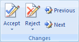

Free
computer Tutorials
|
Free
computer Tutorials
|
|
 home home |
|
|||||
Microsoft Word 2007 to 2010Section Eleven: 1 2
Document Collaboration - Accepting and Rejecting ChangesIn the previous section, you made trackable changes to a Word document. You could now send the document on to somebody else so that they can make changes, too. But what if you want this to be the final revision? You don't want to send somebody this version, if they are not supposed to see the changes.
If you look on the Tracking panel you will see an item called Final showing markup. Click this item to see the following menu: Click on Final to hide all the changes and comments. However, this doesn't do what you think it does - it's not the final document that you should send to somebody else. Simply because they could select Final showing markup from the menu. This would then reveal all your changes! To get a final version without the changes and comments, you need to Accept and Reject changes. So click back on Final Showing Markup from the menu above. This will display all your changes again. The first thing to do is check to see if all of your markups are showing. To check, click on Show Markup in the Tracking panel: Make sure every menu item has a check mark next to it. Next, locate the Changes panel:  Click the Next button. You may then get a dialogue box like this, in Word 2007: Click OK, and your first change will be highlighted. Click the Accept button, and then Accept and Move to Next from the menu: When you click on Accept and Move to Next the underlines and rounded rectangles in the Markup Area will disappear. Keep click the "Accept and Move to Next" menu item to get rid of all of your tracking markup. However, any comments you added will still be there. To get rid of a comment, you need to click on Delete from the Comments panel. When you're finished, you should have a document that has no more changes or comments showing. Save your work. Now try clicking on the Final Showing Markup menu again. None of your changes will appear this time. You can send it off as a final document. Just to double check, click the round Office button in the top left of Word (2007 users only). From the menu that appears, select the Prepare item. You should then some more options appear: In Word 2010, click on the File tab, then the Info item from the menu on the left. You should see this appear: Click Check for Issues to see the above menu. Then select Inspect Document. In both versions, when you click Inspect Document you'll see the Document Inspector appear. In the image above, we have some document properties being revealed. Click the Remove All button to get rid of any personal information in your own documents. The document can now be safely sent to those who shouldn't see all of your markup.
And that's just about it for this Word 2007 and Word 2010 course. There is one final section you may be interested in, however, and that's tweaking the various Word Options. For example, if you want to know how to add or remove items from the Quick Access toolbar at the top of Word then you'll learn how to do it in the section below. <--Back to the Word Contents Page View all our Home Study Computer Courses
|
||||||
|